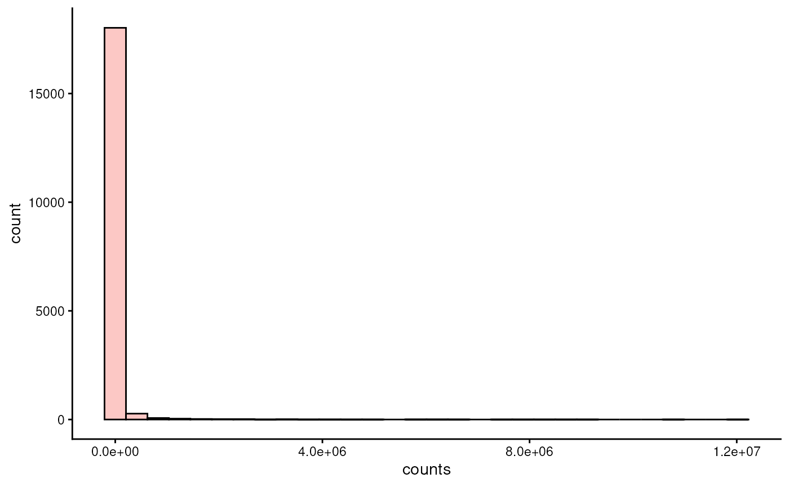
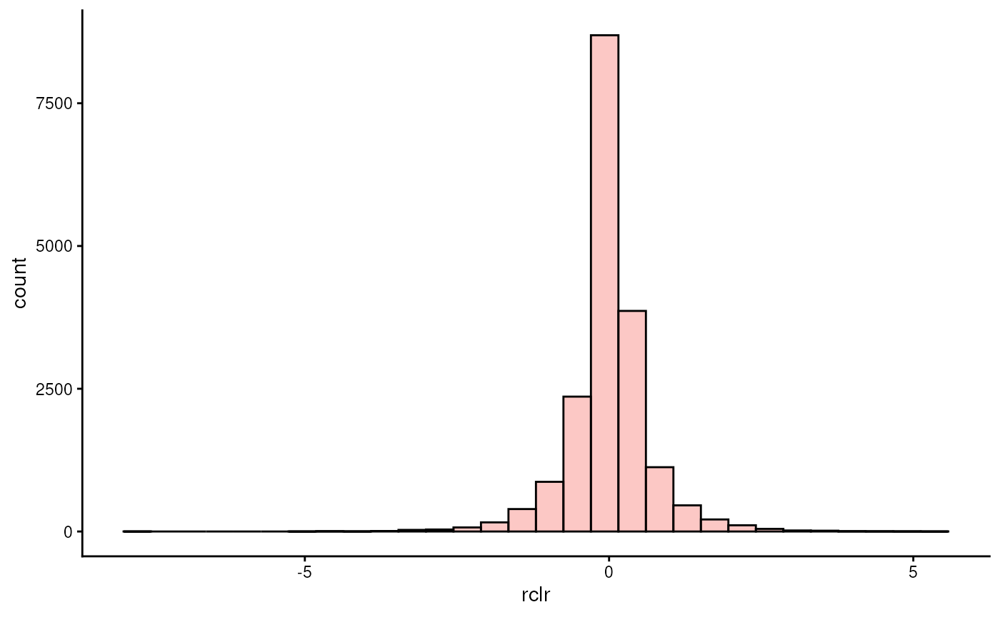
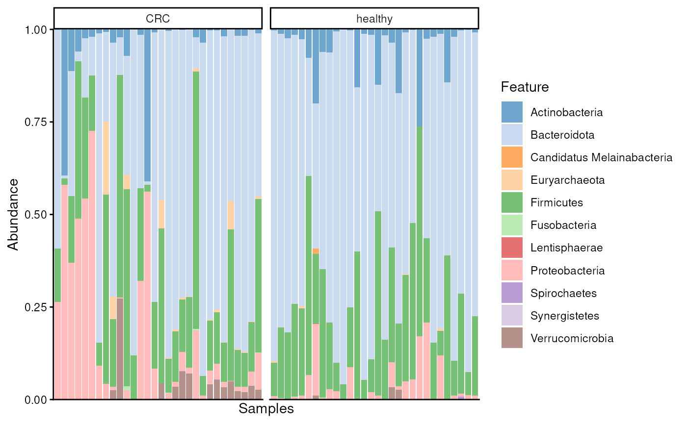
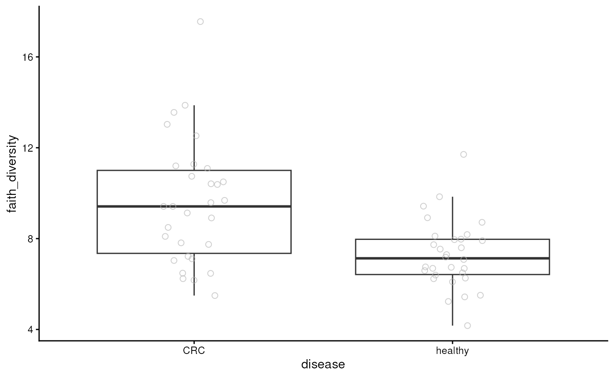
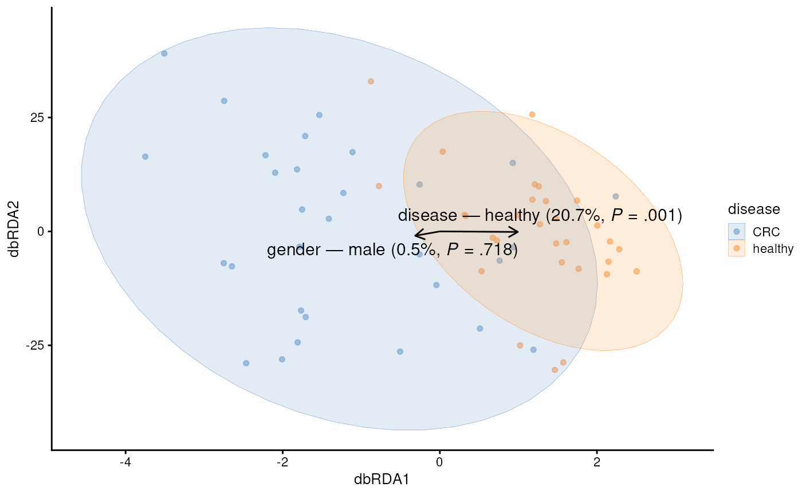
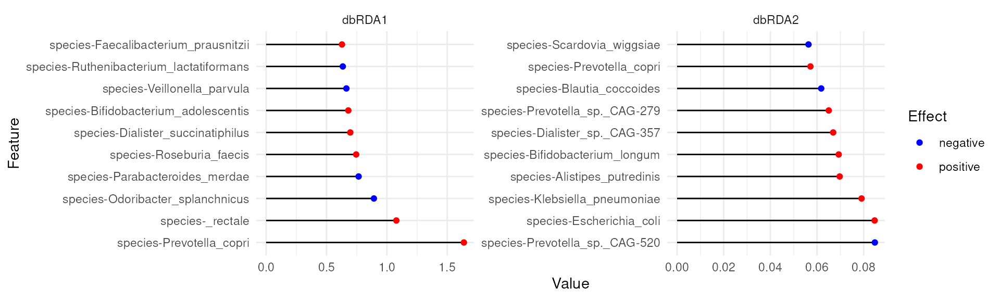
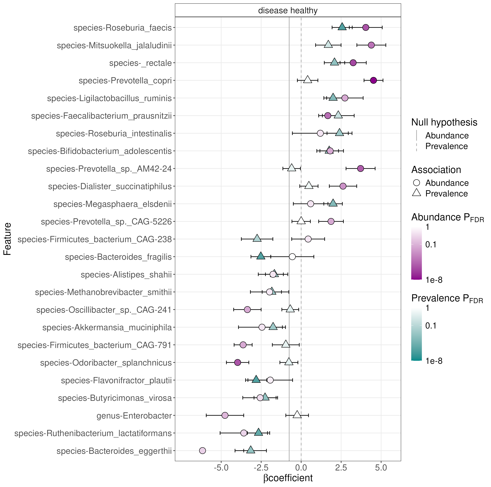

Authors: Tuomas Borman1
Last modified: 6 November, 2025.

Overview
Description
In microbiome research, there is an increasing demand for robust, transparent, and reproducible computational methods. Bioconductor is well-positioned to to fulfill this need by providing high-quality, open-source bioinformatics software. At the core of Bioconductor are standardized data containers that harmonize data management and enable interoperability across the ecosystem.
This workshop introduces the latest advances in microbiome analysis within Bioconductor, focusing on the mia (Microbiome Analysis) framework. The framework is built upon the TreeSummarizedExperiment data container — the central data structure in Bioconductor — and provides a comprehensive suite of statistical tools for microbiome data science. It is continuously expanding with new methods and offers native support for multi-table and hierarchical data, while being computationally more efficient than previous approaches. These features enable users to build modular and reproducible workflows for microbiome analysis.
During the workshop, participants will gain hands-on experience with the TreeSummarizedExperiment data container and the mia framework through a practical case study. The practicals cover common downstream analysis steps, from data import and wrangling to diversity estimation, differential abundance analysis, and visualization. After the workshop, participants will have the skills to continue learning through the freely available Orchestrating Microbiome Analysis (OMA) online book, which promotes best practices and supports adoption of the ecosystem. Together, these resources foster scalable, transparent, and community-driven microbiome data science.
Pre-requisites
To get most of the training session, you should meet the following pre-requisites.
- You have a basic understanding of R. You have written simple R scripts or used Quarto/RMarkdown documents.
- You have basic understanding on what the microbiome is.
If your time allows, we recommend to spend some time to explore beforehand Orchestrating Microbiome Analysis (OMA) online book.
Participation
Participants are encouraged to ask questions throughout the workshop. The session will follow a tutorial, with participants running the tutorial alongside the instructor.
R / Bioconductor packages used
In this training session, we will cover a common methods and packages for microbiome data science in SummarizedExperiment ecosystem. We will have specific focus on mia, which provides essential methods for conducting microbiome analysis.
Time outline
| Activity | Time |
|---|---|
| Practicalities and background | 30m |
| Trained-guided live coding | 60m |
| Break | 30m |
| Trained-guided live coding continues | 60m |
| Time to try things out on your own | 15m |
| Questions, discussion and recap | 15m |
| Total | 3h 30m |
Learning goals and objectives
Questions
- What is mia and OMA?
- How microbiome data science is conducted in SummarizedExperiment ecosystem?
- What benefits this new ecosystem have compared to previous approaches?
Objectives
- Analyze and apply methods: Apply the SummarizedExperiment ecosystem to process and analyze microbiome data.
- Create visualizations: Generate and interpret visualizations.
- Explore documentation: Use the OMA to explore additional tools and methods.
Training session
Trained-guided live coding
Import data
Below, we import a dataset containing 60 samples from healthy controls and patients with colorectal cancer (CRC). First, we import the data files.
library(ape)
dir_name <- file.path("data", "GuptaA_2019")
# Abundance table
path <- file.path(dir_name, "taxonomy_abundance.csv")
assay <- read.csv(path, row.names = 1L)
# Taxonomy table
path <- file.path(dir_name, "taxonomy_table.csv")
taxonomy_table <- read.csv(path, row.names = 1L)
# Sample metadata
path <- file.path(dir_name, "sample_metadata.csv")
sample_metadata <- read.csv(path, row.names = 1L)
# Phylogeny
path <- file.path(dir_name, "phylogeny.tree")
phylogeny <- read.tree(path)Then we create TreeSummarizedExperiment object. Note: data types must be in specific format.
library(mia)
# Abundance table
assay <- assay |> as.matrix()
assay_list <- SimpleList(counts = assay)
# Taxonomy table and sample metadata
taxonomy_table <- taxonomy_table |> DataFrame()
sample_metadata <- sample_metadata |> DataFrame()
# Construct TreeSE
tse <- TreeSummarizedExperiment(
assays = assay_list,
rowData = taxonomy_table,
colData = sample_metadata,
rowTree = phylogeny
)Data container
TreeSummarizedExperiment
extends SummarizedExperiment
class by adding a support for microbiome-specific datatypes. These
include, for instance, rowTree slot that can be utilized to
store phylogeny or any other hierarchical presentation of the data. All
slots derived from SummarizedExperiment
class are also available in TreeSummarizedExperiment,
providing full backward compatibility.

tse
#> class: TreeSummarizedExperiment
#> dim: 308 60
#> metadata(0):
#> assays(1): counts
#> rownames(308): species-Escherichia_coli species-Alistipes_putredinis
#> ... species-Campylobacter_ureolyticus
#> species-Prevotella_sp._oral_taxon_376
#> rowData names(7): superkingdom phylum ... genus species
#> colnames(60): GupDM_A_11 GupDM_A_15 ... GupDM_JO GupDM_JP
#> colData names(27): study_name subject_id ... disease_stage
#> disease_location
#> reducedDimNames(0):
#> mainExpName: NULL
#> altExpNames(0):
#> rowLinks: a LinkDataFrame (308 rows)
#> rowTree: 1 phylo tree(s) (10430 leaves)
#> colLinks: NULL
#> colTree: NULLSlots can be accessed with dedicated accessor functions. For
instance, colData (sample metadata) can be accessed with
colData() function.
# Show only first five rows and columns
colData(tse)[1:5, 1:5]
#> DataFrame with 5 rows and 5 columns
#> study_name subject_id body_site antibiotics_current_use
#> <character> <character> <character> <character>
#> GupDM_A_11 GuptaA_2019 GupDM_A11 stool no
#> GupDM_A_15 GuptaA_2019 GupDM_A15 stool no
#> GupDM_A1 GuptaA_2019 GupDM_A1 stool no
#> GupDM_A10 GuptaA_2019 GupDM_A10 stool no
#> GupDM_A12 GuptaA_2019 GupDM_A12 stool no
#> study_condition
#> <character>
#> GupDM_A_11 CRC
#> GupDM_A_15 CRC
#> GupDM_A1 CRC
#> GupDM_A10 CRC
#> GupDM_A12 CRCThe key functionality of data containers is that it does the sample and feature bookkeeping for us. E.g., we can subset the data container without need for worrying about sample matching between abundance table and sample metadata.
tse[1:10, c(1, 2)]
#> class: TreeSummarizedExperiment
#> dim: 10 2
#> metadata(0):
#> assays(1): counts
#> rownames(10): species-Escherichia_coli species-Alistipes_putredinis ...
#> species-Prevotella_bivia species-Odoribacter_splanchnicus
#> rowData names(7): superkingdom phylum ... genus species
#> colnames(2): GupDM_A_11 GupDM_A_15
#> colData names(27): study_name subject_id ... disease_stage
#> disease_location
#> reducedDimNames(0):
#> mainExpName: NULL
#> altExpNames(0):
#> rowLinks: a LinkDataFrame (10 rows)
#> rowTree: 1 phylo tree(s) (10430 leaves)
#> colLinks: NULL
#> colTree: NULLData processing
Microbiome data has unique characteristics, meaning that dealing with such data also poses unique challenges and approaches. The mia package provides methods for performing common operations on microbiome data within the SummarizedExperiment ecosystem.
Agglomeration
Below, we agglomerate the data into all available taxonomy levels.
tse <- agglomerateByRanks(tse)At first glance, it might seem that nothing has changed. However, the
agglomerated data is stored in the altExp slot. This slot
keeps track of the sample mapping and stores different versions of the
data.
We can access data agglomeration into the phylum level with the following command:
altExp(tse, "phylum")
#> class: TreeSummarizedExperiment
#> dim: 11 60
#> metadata(1): agglomerated_by_rank
#> assays(1): counts
#> rownames(11): Actinobacteria Bacteroidota ... Synergistetes
#> Verrucomicrobia
#> rowData names(7): superkingdom phylum ... genus species
#> colnames(60): GupDM_A_11 GupDM_A_15 ... GupDM_JO GupDM_JP
#> colData names(27): study_name subject_id ... disease_stage
#> disease_location
#> reducedDimNames(0):
#> mainExpName: NULL
#> altExpNames(0):
#> rowLinks: a LinkDataFrame (11 rows)
#> rowTree: 1 phylo tree(s) (11 leaves)
#> colLinks: NULL
#> colTree: NULLThe data looks similar to original data; only the number of rows has
changed. While we could store the phylum-level data in a separate
variable, it’s better to keep it in the altExp slot, as it
maintains consistent sample mapping for us.
Transformation
Microbiome data is typically zero-inflated, meaning that there are lots of unobserved features. Let’s first visualize the distribution of counts.
library(miaViz)
plotHistogram(tse, assay.type = "counts")
As we can see, the distribution is highly right-skewed. To make the data more normally-distributed, one can apply centered log-ratio transformation.
tse <- transformAssay(
tse,
assay.type = "counts",
method = "rclr",
altexp = altExpNames(tse)
)And when we visualize the distribution…
plotHistogram(tse, assay.type = "rclr")
… we see that the data is centered at zero and exhibit a distribution that is more similar to normal than before.
Another common transformation is relative transformation.
tse <- transformAssay(
tse,
assay.type = "counts",
method = "relabundance",
altexp = altExpNames(tse)
)We can access the transformed data with the following command:
assay(tse, "relabundance")[1:5, 1:5]
#> GupDM_A_11 GupDM_A_15 GupDM_A1
#> species-Escherichia_coli 0.26212849 0.5733251 0.246128460
#> species-Alistipes_putredinis 0.15494579 0.0000000 0.008134657
#> species-Porphyromonas_asaccharolytica 0.07437682 0.0000000 0.003352148
#> species-Bacteroides_uniformis 0.07322334 0.0000000 0.010739912
#> species-Prevotella_stercorea 0.06433625 0.0000000 0.008512455
#> GupDM_A10 GupDM_A12
#> species-Escherichia_coli 0.3415149 0.0128953044
#> species-Alistipes_putredinis 0.0000000 0.0000000000
#> species-Porphyromonas_asaccharolytica 0.0000000 0.0000000000
#> species-Bacteroides_uniformis 0.0000000 0.0026836120
#> species-Prevotella_stercorea 0.0000000 0.0004406144Community composition
A common visualizing technique is to summarize relative abundances of features with a bar plot. Below, we visualize phyla. To compare controls and CRC patients we can visualize the groups separately.
# Get phylum-level data
tse_phyla <- altExp(tse, "phylum")
# Create a bar plot
plotAbundance(
tse_phyla,
assay.type = "relabundance",
col.var = "disease",
facet.cols = TRUE,
scales = "free_x"
)
From the figure, we observe that especially abundance of Proteobacteria seems to differ between the groups.
Alpha diversity
Alpha diversity indices can be calculated with
addAlpha().
tse <- addAlpha(tse, assay.type = "counts")The results are stored in colData. By default, the
function returns a set of indices that considers different aspects of
diversity. Below, we visualize Faith’s diversity that assess the
phylogenetic diversity of samples.
plotBoxplot(tse, col.var = "faith_diversity", x = "disease")
From the figure, we can observe that CRC patients have more diverse microbiomes. This may suggest that their gut is colonized by microbes that are not typically present in a healthy gut.
Beta diversity
A common beta diversity method is Principal Coordinate Analysis (PCoA) also known as Multi-dimensional Scaling (MDS). It is unsupervised technique that can be utilized to find patterns from the data.
tse <- addMDS(
tse,
assay.type = "counts",
method = "unifrac"
)PCoA results are commonly visualized with a scatter plot. Here we color points based on disease.
library(scater)
plotReducedDim(tse, dimred = "MDS", colour_by = "disease")
We can see clear pattern. CRC patients’ microbiome profile seem to differ from healthy ones.
Next, we can utilize distance-based Redundancy Analysis (dbRDA). It is similar to PCoA, but it specifically aims to assess how much variance or association is accounted to sample covariates.
tse <- addRDA(
tse,
assay.type = "rclr",
method = "euclidean",
formula = x ~ disease + gender
)Similarly, we can visualize the results with a biplot, specific type of scatter plot.
plotRDA(tse, dimred = "RDA", colour.by = "disease")
Feature loadings from the dbRDA analysis offer a first detailed look at the features that are associated with CRC.
plotLoadings(tse, dimred = "RDA", ncomponents = 2L, layout = "lollipop")
For instance, Prevotella copri is positively associated with the first coordinate (or x-axis in our biplot). Because, CRC was also positively associated with the first coordinate, this suggests association between higher abundance of Prevotella copri and CRC.
Differential abundance analysis (DAA)
In differential abundance analysis, we can dig deeper on our analysis. We use maaslin3, which uses linear models to assess differentially abundant (and prevalent) features.
library(maaslin3)
res <- maaslin3(
tse,
assay.type = "counts",
formula = ~ disease,
normalization = "TSS",
transform = "LOG",
output = "maaslin3_output",
verbosity = "ERROR"
)The function generates different outputs. The output includes summary
plot in a directory that was specified by output
argument.
library(knitr)
file_path <- file.path("maaslin3_output", "figures", "summary_plot.png")
include_graphics(file_path)
The results confirm our dbRDA results. There are also other features that are either differentially abundant or prevalent in study groups.

Questions, discussion and recap
- Microbiome data science in SummarizedExperiment ecosystem
- Scalable and computationally efficient
- Integration of multi-table and multi-omics datasets
Thank you for your time!
Join us!
- Online book: microbiome.github.io/OMA
- Discussion forums: github.com/microbiome/OMA/discussions and Bioconductor Zulip


Session information
sessionInfo()
#> R version 4.6.1 (2026-06-24)
#> Platform: x86_64-pc-linux-gnu
#> Running under: Ubuntu 24.04.4 LTS
#>
#> Matrix products: default
#> BLAS: /usr/lib/x86_64-linux-gnu/openblas-pthread/libblas.so.3
#> LAPACK: /usr/lib/x86_64-linux-gnu/openblas-pthread/libopenblasp-r0.3.26.so; LAPACK version 3.12.0
#>
#> locale:
#> [1] LC_CTYPE=en_US.UTF-8 LC_NUMERIC=C
#> [3] LC_TIME=en_US.UTF-8 LC_COLLATE=en_US.UTF-8
#> [5] LC_MONETARY=en_US.UTF-8 LC_MESSAGES=en_US.UTF-8
#> [7] LC_PAPER=en_US.UTF-8 LC_NAME=C
#> [9] LC_ADDRESS=C LC_TELEPHONE=C
#> [11] LC_MEASUREMENT=en_US.UTF-8 LC_IDENTIFICATION=C
#>
#> time zone: Etc/UTC
#> tzcode source: system (glibc)
#>
#> attached base packages:
#> [1] stats4 stats graphics grDevices utils datasets methods
#> [8] base
#>
#> other attached packages:
#> [1] knitr_1.51 maaslin3_1.5.3
#> [3] scater_1.41.2 scuttle_1.23.1
#> [5] miaViz_1.21.2 ggraph_2.2.2
#> [7] ggplot2_4.0.3 mia_1.21.7
#> [9] TreeSummarizedExperiment_2.21.0 Biostrings_2.81.6
#> [11] XVector_0.53.0 SingleCellExperiment_1.35.2
#> [13] MultiAssayExperiment_1.39.0 SummarizedExperiment_1.43.0
#> [15] Biobase_2.73.2 GenomicRanges_1.65.1
#> [17] Seqinfo_1.3.0 IRanges_2.47.2
#> [19] S4Vectors_0.51.6 BiocGenerics_0.59.10
#> [21] generics_0.1.4 MatrixGenerics_1.25.0
#> [23] matrixStats_1.5.0 ape_5.8-1
#>
#> loaded via a namespace (and not attached):
#> [1] RColorBrewer_1.1-3 jsonlite_2.0.0
#> [3] magrittr_2.0.5 TH.data_1.1-5
#> [5] ggbeeswarm_0.7.3 farver_2.1.2
#> [7] rmarkdown_2.31 fs_2.1.0
#> [9] ragg_1.5.2 vctrs_0.7.3
#> [11] memoise_2.0.1 DelayedMatrixStats_1.35.0
#> [13] ggtree_4.3.0 htmltools_0.5.9
#> [15] S4Arrays_1.13.0 BiocNeighbors_2.7.2
#> [17] janeaustenr_1.0.0 SparseArray_1.13.2
#> [19] gridGraphics_0.5-1 sass_0.4.10
#> [21] bslib_0.12.0 tokenizers_0.3.0
#> [23] htmlwidgets_1.6.4 desc_1.4.3
#> [25] sandwich_3.1-3 plyr_1.8.9
#> [27] DECIPHER_3.9.2 zoo_1.9-0
#> [29] cachem_1.1.0 igraph_2.3.3
#> [31] lifecycle_1.0.5 pkgconfig_2.0.3
#> [33] rsvd_1.0.5 Matrix_1.7-6
#> [35] R6_2.6.1 fastmap_1.2.0
#> [37] collapse_2.1.7 tidytext_0.4.3
#> [39] digest_0.6.39 aplot_0.3.1
#> [41] ggnewscale_0.5.2 patchwork_1.3.2
#> [43] irlba_2.3.7 SnowballC_0.7.1
#> [45] textshaping_1.0.5 vegan_2.7-5
#> [47] beachmat_2.29.0 labeling_0.4.3
#> [49] polyclip_1.10-7 abind_1.4-8
#> [51] mgcv_1.9-4 compiler_4.6.1
#> [53] fontquiver_0.2.1 withr_3.0.3
#> [55] S7_0.2.2 BiocParallel_1.47.0
#> [57] viridis_0.6.5 DBI_1.3.0
#> [59] ggforce_0.5.0 MASS_7.3-66
#> [61] rappdirs_0.3.4 DelayedArray_0.39.3
#> [63] bluster_1.23.0 permute_0.9-10
#> [65] optparse_1.8.2 tools_4.6.1
#> [67] vipor_0.4.7 otel_0.2.0
#> [69] beeswarm_0.4.0 glue_1.8.1
#> [71] nlme_3.1-170 grid_4.6.1
#> [73] cluster_2.1.8.3 reshape2_1.4.5
#> [75] gtable_0.3.6 tidyr_1.3.2
#> [77] data.table_1.18.4 BiocSingular_1.29.0
#> [79] tidygraph_1.3.1 ScaledMatrix_1.21.0
#> [81] ggrepel_0.9.8 pillar_1.11.1
#> [83] stringr_1.6.0 yulab.utils_0.2.4
#> [85] splines_4.6.1 dplyr_1.2.1
#> [87] tweenr_2.0.3 treeio_1.37.0
#> [89] lattice_0.22-9 survival_3.8-9
#> [91] tidyselect_1.2.1 DirichletMultinomial_1.55.0
#> [93] fontLiberation_0.1.0 fontBitstreamVera_0.1.1
#> [95] gridExtra_2.3.1 xfun_0.60
#> [97] graphlayouts_1.2.5 stringi_1.8.9
#> [99] lazyeval_0.2.3 ggfun_0.2.1
#> [101] yaml_2.3.12 evaluate_1.0.5
#> [103] codetools_0.2-20 gdtools_0.5.1
#> [105] tibble_3.3.1 BiocManager_1.30.27
#> [107] ggplotify_0.1.3 cli_3.6.6
#> [109] systemfonts_1.3.2 jquerylib_0.1.4
#> [111] mirai_2.7.2 Rcpp_1.1.2
#> [113] png_0.1-9 nanonext_1.10.2
#> [115] parallel_4.6.1 pkgdown_2.2.1
#> [117] sparseMatrixStats_1.25.0 mvtnorm_1.4-2
#> [119] decontam_1.33.0 viridisLite_0.4.3
#> [121] tidytree_0.4.8 ggiraph_0.9.6
#> [123] scales_1.4.0 purrr_1.2.2
#> [125] crayon_1.5.3 BiocStyle_2.41.0
#> [127] rlang_1.3.0 multcomp_1.4-31
#> [129] cowplot_1.2.0University of Turku, tvborm@utu.fi↩︎